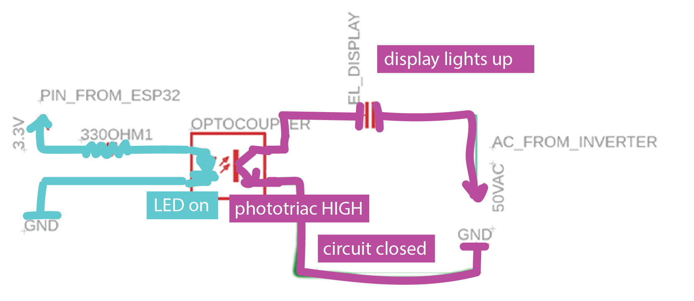
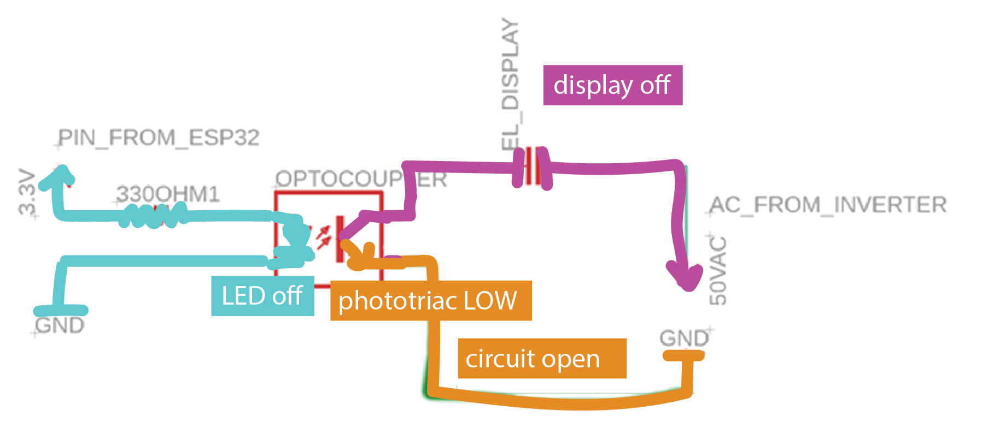

6.810 Engineering Interactive Technologies (fall 2021)
Lab 6: Controlling Electroluminescent Displays
In this lab, you will create the control circuit for your electrolumiscent display so that you can turn on/off the display and even dim it to a specific brightness using your ESP microcontroller.
can we have some nice images here or a video showing the display dimming?


Steps:
- Safety Instructions
- Connect Inverter Output to EL Display
- Connect Inverter Input to Battery
- Power up Your Display
- Isolate Display and Control Circuit
- Add Switch to Control Circuit
- Write Program to Blink Display
- Write Program to Dim Display
Deliverables
At the end of the lab, upload to your student google drive:
- the Arduino code (.ino) for dimming your display
- 2-3 photos (.jpg or .png) from different angles of your circuit
- a short video (.mov or .mp4, max. 1 minute) showing how you display dims and performs a full cycle from bright to dark and dark to bright again
(1) Safety Instructions
In this tutorial, we will generate 50V AC from a 1.2V AA battery using an inverter. 50V AC is the maximum allowed voltage for class activities. You are not allowed to use the inverter with anything else than the 1.2V AA battery we provide for you. Our 50V AC are low current and not dangerous, but you will feel a sensation at the tips of your fingers when touching the circuit. Therefore, never plug the display in while you are working on the circuit and you are touching the wires!
While building your circuit, you must adhere to the following rules:
- unplug the battery before you do any wiring, only after it is unplugged you are allowed to touch the circuit and exchange wires and components
- once you are done wiring and you have made sure you are not touching any part of the circuit anymore, plug the battery back in
- never touch the display or any part of the circuit while the battery is plugged in, i.e. the circuit is powered
add images showing somebody unplugging, wiring, pluggin.
(2) Connect Inverter Output to EL Display
AC vs. DC current: EL displays require an alternating current between the two elecrodes to excite the phosphor and make it light up. Therefore, just connecting it to a DC power supply, like the 3.3V DC from your ESP32, won't do the trick. We therefore use an inverter to generate AC current from DC.
Add Jumper Wires to Inverter Output: Before you do anything, remove the battery from your battery holder to remove all power from the circuit. The inverter output is the black/black cable. Take two jumper wires and stick them into the white connector of the interverter output.
Crocodile Clamp to Display Bottom Layer (copper layer with copper tape flap): Next, use a crocodile clamp to connect the first inverter output to the copper side of the display. One end of the crocodile clamp goes onto the jumper wire, the other goes onto the little copper flap. Be careful that you don't rip of the copper flap while working with the wires.
Crocodile Clamp to Display Top Layer (ITO with copper tape): Next, use a second crocodile clamp to connect the other inverter output to the top layer of the display, i.e. the ITO. One end of the crocodile clamp goes on the jumper wire, the other goes onto the ITO sheet where there is copper tape.
can we replace the middle image? the display is not yet supposed to be on.

Add Jumper Wires to Inverter Input: The inverter input is the black/red cable. Take two jumper wires and stick them into the white connector of the interverter input.
Crocodile Clamp to + pol of Battery Holder: Before you do this, make sure the battery is still removed and not in the holder. Use a crocodile clamp to connect the red wire to the + pol of your battery holder.
Crocodile Clamp to - pol of Battery Holder: Use another crocodile clamp to connect black to -.
can we have an image here with wiring as described but without battery?
(4) Power up Your Display
Flip Display: Once you are done wiring, turn the display around such that you see the top side. The copper should be on the bottom now and you can't see it anymore.
Insert AA Battery (do not touch the circuit anymore): Before you insert the battery, make sure you are not touching the circuit anymore at any place, do not touch the display. Then insert the AA battery into the battery holder. You should see a bright EL display in the shape of the coffee mug now.
Debugging the Display: If your display does not light up, remove the battery, then check if all wires are connected properly. Before you reinsert the battery, remember you should not touch the circuit or display.

(5) Isolate Display and Control Circuit
You already know how to turn on/off your display by plugging and unplugging the battery. It would be nicer to do this via code and not by physically plugging/unplugging the battery. Thus, we will next build a control circuit that lets you do this.
What is an Optocoupler: We want to connect our ESP to the display to be able to turn it on/off via code. But there is a problem. The ESP32 is rated only up to 12V so a higher voltage like the 50V AC we use for our display could potentially damage the microcontroller. Therefore, we have to isolate the ESP32 from the 50V AC power supply. For this purpose, we will use an optocoupler, which uses optical signaling rather than electrical signaling. An optocoupler houses an LED and a photo-triac. When the LED turns on, it activates the photo-triac and energy flows from GND from the inverter to VCC on the inverter. Since communication is solely through light, no voltage of the 50V power supply from the display can jump over to the ESP microcontroller. Thus optocouplers allow to isolate each part of the circuit while still enabling communication between the two. All we need to do is to later send a high signal to the optocoupler to turn its internal LED on whenever we want the display to be on, i.e. receiving energy.
in the schematic, I don't understand what the GND and 50V AC refer to. Is the 50V AC both lines of the interver output? or just one? Can we label this consistent with what we had in the previous sections.
 
Connect Optocoupler to ESP: Use jumper wires to connect the optocoupler to 3.3V and GND on the ESP. Note that the optocoupler has to be plugged in in a specific orientation. Look at the datasheet of the optocoupler here to find out where the pins are. The little dot on its top indicates the top left corner of the component. I think this is to complicated, I wouldn't know what to do with the datasheet.

Add Resistor to Optocoupler: The optocoupler needs one 330ohm resistor to limit the current that reaches the optocoupler's LED and prevents it from blowing up. Add the resistor to your circuit.
Connect the Display Circuit to the Optocoupler: Connect the optocoupler to display circuit. please explain more how. This will ensure that when the octocouplers LED is set to high, the display circuit is closed and current will flow from GND from the inverter the top of the display.
(6) Add Switch to Control Circuit
I don't understand why I need the triac. Why can I not just use a GPIO pin from the ESP instead of VCC and then turn on/off the optocoupler as my switch?
In the above setup, we could have wired the VCC to an ESP GPIO pin to turn the optocoupler LED on/off and thereby the display on/off. However, we don't want to do this because what the reason is. Instead, we are going to use a component called a triac.
What are Triacs? Triacs are similar to transistors but block alternating current (AC) instead of direct current (DC). By switching the triac on/off, we can thus block the AC current coming from our battery. This allows us to turn the display on/off under computer control. The triac's pins and how you add it to a circuit is similar to a transistor. It has two connectors for VCC and GND and a Gate that triggers if current passes through or is blocked.

Connect Optocoupler to Triac: Connect the output of the optocoupler to the gate of the triac. Thus, when the optocoupler's LED is high, the triacs gate will close and current will flow.
Add Resistors: Finally, add two 330 ohm resistors to the triac circuit that limit the current that reaches the triac to prevent it from being damaged.
can we color code this schematic similar to above to show triac open/closed and what happens to the rest of the circuit?

(7) Write Program to Blink Display
Now that you wired up our control circuit, you are ready to write the code for it. As an example, we will write a script that lets the display blink. This is very simple with the circuit you already built.
Set Optocoupler Pin to HIGH/LOW to Blink: Connect your ESP to your laptop and create a new Arduino program. Check to which pin you connected the optocoupler (It's new to me that the optocoupler is connected to a pin? in the schematic it looked like it is only connected to GND and VCC?), declare the pin in your Arduino code and set it to HIGH and LOW alternating whenever one second has passed.
can we have a short video here showing the display blinking?
(8) Write Program to Dim Display
Finally, we want to not just turn the display on/off but also set the displays brightness (e.g. dimming it down).
Duty Cycle: When you create a PWM signal it means that you turn on and off a signal for a certain duty cycle. The longer the signal is turned on in one duty cycle the brighter the light source will be (see Figure below). Similarly, the longer the signal is turned off in one duty cycle the darker the light source will be. Thus, a duty cycle of 25% results in a darker display than a duty cycle of 75%.
Frequency: So how is the duty cycle related to the frequency? The duty cycle only tells you the percentage the signal is on/off within a cycle (e.g., 25%). It does not say how long a cycle is. For this, you need to define the frequency. A higher frequency results in a shorter overall cycle (not affecting the percentage the signal is on/off) than a lower frequency as you can see below.


High Frequencies and the Human Eye: If the frequency is very high and thus the duty cycle is compressed into a short time window, the turning on and off of the signal (i.e. the display) happens very fast. If it is fast enough, humans do not notice that the display is turned on and off because of limitations of visual perception, which is great because we can use the on/off mechanism to create different brightness level without the user noticing that we are effectively just turning the display on/off at a very fast rate. The frequency should thus be high enough that the duty cycles are not visible to the human eye.
Why can the frequency not be arbitrarily high? We just said higher frequency, i.e. faster switching on/off, is better. The frequency, however, can not be infinitely high because of the specific setup we chose for our display circuit. We are dealing with two different signals. One signal is coming in the form of the AC signal from our inverter (frequency: 800Hz).
The other signal is coming in the form of the PWM signal from our ESP (our choice of frequency). Having the inverter frequency given at 800Hz limits our choice for the frequency of the PWM signal from the ESP because of something called 'zero crossing circuit'.

What is a zero-crossing? A zero-crossing is when the AC signal crosses the x-axis. When and how often that occurs depends on the frequency of the signal. When you check out the optocoupler's datasheet, you will see that it contains a "zero-crossing circuit". What this means is that the optocoupler will only switch the display on/off when the AC signal of the inverter crosses zero AND the PWM signal tells the optocoupler to change the display state I don't understand this. so they both have to cross at the same time right? We should emphasize this.
PWM Frequency higher than Inverter Frequency: So what happens if your PWM frequency is higher than your inverter frequency? The middle image below shows this: Although the PWM frequency demands that the display be switched off/on, the optocoupler will do nothing since there is no zero-crossing of the inverter in that time frame. Thus, if our PWM signal is faster than the inverter's AC frequency, the optocoupler switch cannot react fast enough. As a result, the optocoupler switch will react at some random point in time later, which disrupts the chosen duty cycle and makes it longer or shorter. Since the duty cycle is not consistent anymore, you will see the display flicker since it goes into random brightness states.
PWM Frequency lower than Inverter Frequency: Now let's look at the same scenario when the PWM frequency is lower than the inverter frequency. This will work well as you can see in the right image below. When the PWM frequency demands the display to be switched off/on, there are several zero-crossings where the optocoupler can take action right away. Thus, we have to select a PWM frequency that is significantly lower than the AC power supply frequency. To be significantly below the inverter's AC frequency, we should set the PWM signal to around 100Hz to get a good result in our dimming.


Set the PWM frequency: You can set the PWM frequency using the ledcSetup command.
ledcSetup(int ledChannel, int freq, int duty_resolution);
Channel Number: The ESP has 16 internal channels which can generate independent waveforms (note that these are NOT pin numbers on the ESP, but internal channels inside the ESP). The channel numbers range from 0-15. For our purposes, you can pick any channel you like.
Frequency: As mentioned previously, the frequency should be '100' Hz.
Duty resolution: The duty resolution is expressed in bits and determines how many different duty cycles we can choose from, i.e. how many different brightness options we will have when dimming the display. For instance, 3 bits gives us 8 different cycles to choose from (12.5%, 25%, 37.5%,... 100%). For our purposes '3' is a good choice.
Specify the Output Pin of the PWM Signal: Now that you specified the signal with ledcSetup(), you need to specify on which GPIO pin number of the ESP the signal should appear.
ledcAttachPin(GPIO_PIN, channel_number)
GPIO Pin: This is the pin that goes from the ESP to the display control circuit.
Channel Number: The PWM channel number is the same as above.
Generate the PWM Signal on the Output Pin: Finally, you need to generate the actual PWM signal, which you had previously defined with the ledcSetup() and ledcAttachPin() functions.
ledcWrite(channel_number, duty_cycle):
Channel Number: The PWM channel number is the same as above.
Duty Cycle: The duty cycle is different from the duty resolution. In the duty cycle parameter, you tell the ledcWrite() function, which of the duty cycles from your duty resolution should be used. Since we chose 3 bits, which gives us 8 values ranging from 12.5%, 25%, 37.5% .... 100%, then our duty cycle parameter is the index of the duty cycle you want to use. For instance, using 2 for the duty cycle parameter would give you 37.5% for the duty cycle.
Dim the Display Repeatedly: Write a piece of code that puts the ledcWrite(channel_number, duty_cycle) function in loop() to repeatedly increase brightness from 0% to 100% in 2 seconds and then reduces the brightness down again in another 2 seconds. The display should repeat this dimming cycle infinitely.
can we include a short video here showing this?
Deliverables
At the end of the lab, upload to your student google drive:
- the Arduino code (.ino) for dimming your display
- 2-3 photos (.jpg or .png) from different angles of your circuit
- a short video (.mov or .mp4, max. 1 minute) showing how you display dims and performs a full cycle from bright to dark and dark to bright again